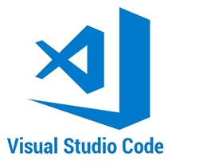
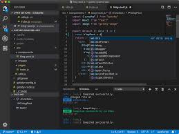

L'IDE VISUAL STUDIO CODE
description :
 Visual Studio Code est un éditeur de code source qui peut être utilisé avec une variété de langages de programmation, notamment Java, JavaScript, Go, Node.js et C ++. Il est basé sur le cadre Electron, qui est utilisé pour développer des applications Web Node.js qui s'exécutent sur le moteur de présentation Blink. Visual Studio Code utilise le même composant d'éditeur (nom de code 'Monaco') utilisé dans Azure DevOps (anciennement appelé Visual Studio Online et Visual Studio Team Services).
détails :
 Visual Studio Code prend immédiatement en charge presque tous les principaux langages de programmation. Plusieurs d'entre eux sont inclus par défaut, par exemple JavaScript, TypeScript, CSS et HTML, mais d'autres extensions de langage peuvent être trouvées et téléchargées gratuitement à partir de VS Code Marketplace.
TUTOS
Installation :
Extensions :
Config Php :
DOWNLOAD
Ce client gratuit, peut être utilisé directement avec sa configuration par défaut. Mais vous ne pourrez pas vous passer des nombreux packages qui multiplient sa productivité, quelque soit le langage considéré. La vidéo dédiée à ceux-ci vous donnera une liste non exhaustive, afin de mieux configurer votre environnement de travail.
En vrac:
- emmet et l'usage des snippets
- atom-beautify, le nettoyeur de code
- autoclose-html-plus ferme vos balises
- atom-liquid-snippets pour les commandes
- git-blame, git-plus, git-time
- linters pour différents langages
- etc...